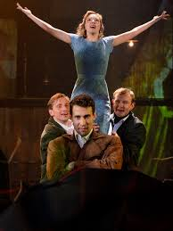
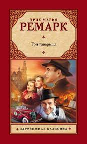

5. Три товарища

фото №1

фото №2
 купить
купить
Главные герои:
- Роберт Локамп (Робби) – тридцатилетний мужчина, участник Первой мировой войны, лучший друг Отто и Готтфрида, влюбленный в Патрицию.
- Отто Кестер – владелец автомастерской, во время войны был летчиком, страстный автогонщик-любитель, боксер.
- Готтфрид Ленц – фронтовой товарищ Роберта и Отто, их ровесник, легкий и позитивный, любитель путешествовать.
- Патриция Хольман (Пат) – возлюбленная Роберта.
Другие персонажи:
- Альфонс – владелец пивной, славный малый, добрый друг Ленца.